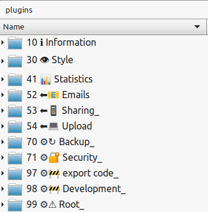

Personal Data Manager (PDM) is a personal digital vault to keep your files private, intact and accessible. (website)
PDM allows you to host all your personnal data to keep your files in a single standard folder located on the server.
Files can be added by drag-and-drop, 'shared' from a mobile device), uploaded over FTP, etc... depending on your server configuration.
Uploaded files can then be viewed, edited, archived or set as reminders.
Click here to get more information about using PDM...
Adding a file
To upload a file, simply drag and drop it onto the page.
You can also create a new text file: juste type the name in the search field (+enter).
Plugins and / or server setup can let you create or import files sideways (share from mobile devices, send over FTP, drop in desktop folder, import from mailbox, etc...).
It just need to drop the file in the server's INBOX folder!
Files management's logics
image
Added files land in the INBOX.
Never-seen-before files requiring attention appear in red and can be acknowleged by clicking on it.
Other files appear in blue.
INBOX files can be viewed (click), edited (✍), retrieved (➥), pushed-back to a later date (▲) or archived (▼)
ARCHIVED files appear in gray. These are read-only; they can be viewed (click), downloaded (📥), copied-back to inbox (⧋)
Filtering
The search field allows to filter files based on filename
The menu (☰) reveals additional filtering options:
filters files based on the date. ‘ALL’, shows all files, including those in the future (as reminders).
☛ Sort by
lets the user sort files by date, size or shuffle.
☛ #
reveals an extra menu with the list of available plugins.
View
image
When viewing a file, the menu button (☰) lets the user access a list of additional predefined actions for the file and the close button (✕) brings the user back to the main page.
Text files, Images, Videos, Audio files, emails, PDFs will be rendered in most cases.
For streamables (i.e. Videos and Audio files only) if the user clicks on the icon -not just the 'play' button- files will play one after another (i.e ‘auto-play’).
If the system cannot properly display the content of a file, it will show a clickable icon to symbolize the file’s content and let the user download it to view it locally.
Edit
image
In edit mode, the close button (✕) discards changes and takes the user to the precendent screen, the save button (💾) and delete button (🗑), saves ⁄ deletes the changes and takes the user back to the main page.
The filename field lets the user change the filename. The filename cannot exceed 240 characters or contain ‘⁄’ characters.
Text files content (md,txt…) can be edited.
For non-text files, the system will show an icon to symbolize the file’s content.
The user can click the icon to download the file’s content and modify it locally. The modified file can then be dragged-and-dropped on the icon to upload back the modified file’s content.
Install, Customize, Develop
To install PDM: Download, uncompress, copy onto a linux + http/php server.
System configuration is done by editing directly the server file (php) and the client file (html/javascript).
Plugins can be added/removed/modified to give the user server-level functionnalities (backup, password management, share from mobile devices, etc...).
Click here to get read more technical information...
Install and Run
Create a http server with the following features:
OS: linux (we need 'stat', 'nohup', 'php' commands)
Security: the web server should ensure the adequate security level of the entire root directory. HTTPS + http authentication is the most basic solution. In any case security and authentication should be taken care of by the http server.
PHP support (last version)
File system: Ext4
Disk space: "Enougth"
Other services such as SFTP, SSH, SFT, CRON will be needed to add server-level functionalities through plugins
Copy files In the root directory (note: all are needed. They will NOT be created automatically)
Copy file “SETTINGS_name.txt”
Copy file “SETTINGS_icon.svg”
Copy folder “INBOX”
Copy folder “DESKTOP”
Copy folder “ARCHIVES”
Copy folder “system”
Make sure all files and folder have the proper permission (chmod -R 755)
Note: for a first try, the system works perfectly fine on linux with PHP built-in server.
To do this, simply uncompress all the files in a folder, .. ... and your done! (oups, PHP built in server is single-threaded, you will need to configure the client to do time-fixed polling, not long polls)
Visit /system/index.php
Configure
The folder 'system' contains a website (AKA, the 'system') that honnors the PDM conventions standard functions. It contains:
A server-script: index.php
A client-page: client.html
A plugins directory: plugins
Optionally, a cache directory: cache
The system is totally independant from the http server and as a consequence, it is possible to tweak your server to serve this page as default, after login, deal with security, etc...
To maximize simplicity, code readability, etc... configuration is done by directly editing the server-script (php) and the client-page (html/javascript)
Configure the server
To configure the server-script, open 'index.php', and edit the variables at the top of the file. Explainations are given in the file or are self-explonatory. Major settings are:
Long polls - timeout: how long can the server hold an update request from the client (before a 503 gateaway or any other error closing the connection)
Long polls - local polling frequency: when holding a long poll, how often should the system check for changes
Configure the client
To configure the client-page, open the 'client.html', and search for the keyword C'LIENTSETTINGS'. Explainations are given in the file or are self-explonatory. Major settings are:
Polling policy: should it probe for update with background long polls, fixed-time polls or no polling at all (get updates on user actions only).
Integrate - Plugins
This system relies on plugins to let users perform unconventional / rarely used actions (without cluttering the interface) and allow server-integration. Examples:
view PDM documentation
show statistics
import emails from IMAP folder to INBOX
import files from FTP folder to INBOX (allows sharing from mobile device)
Cutomize icon, name
Manage server security settings
Manage server backups (with rsync for instance)
Batch rename ARCHIVES files (SUPER)
You name it...

Plugins are basically in-a-folder-mini-websites inside the “plugins” folder:
Plugins folders may have any name, however:
if the name starts with '.': the plugin is ignored.
if the name starts with a number (with or without a trailing white space), it will help with ordering plugins, but the number will not be included in the cosmetical name.
if the name ends with a '_', this trailing will not be included in the cosmetical name (used to identify plugins taylored to the user/system during update)
Plugins must have an ‘index.php’ file at their root
This file is the entry-point when the plugin is visited by the user
Plugins may have an ‘daemon.php’ php cli-style script at their root
this script will be executed at least once at the beggining of each user connexion to the main system, then any time the server-script check the system for updates (depends on polling policy of the client)
this script must echo only "0" (string) on success and an error message (string) on failure.
Independance with other plugins:
plugins cannot relie on another plugin or on the system client-server API (it should re-implement it as needed)
Independance with the system:
Plugins should not rely on the system Client-Server API but re-implement it as needed.
Plugins should cooperatively signify the system of any modification in the USER DATA by deleting the cache folder /system/cache IF it exists (check ABOUT CACHE in the server-script) or even regenerating the cache files if they now how it is done by the server-script.
Author & License
Author: Benjamin PAPET-CHARBONNEL.
I started developping this software to improve my own digital hygiene.
After using it for months, I realised that it could also help others.
For this reason I decided to publish the code.
The code and user experience is based on the ‘KISS’ philosophy - it is design for absolute minimum maintenance and maximum robustness.
(contact me)
This software contains all or portions of the code of the marked.js.org project for rendering Markdown: Copyright (c) 2011-2021, Christopher Jeffrey. (MIT Licensed). (https://marked.js.org/)
The rest of the code is free and unencumbered software released into the public domain. For more information, please refer to https://unlicense.org/
 The rest of the code is free and unencumbered software released into the public domain. For more information, please refer to https://unlicense.org/
The rest of the code is free and unencumbered software released into the public domain. For more information, please refer to https://unlicense.org/